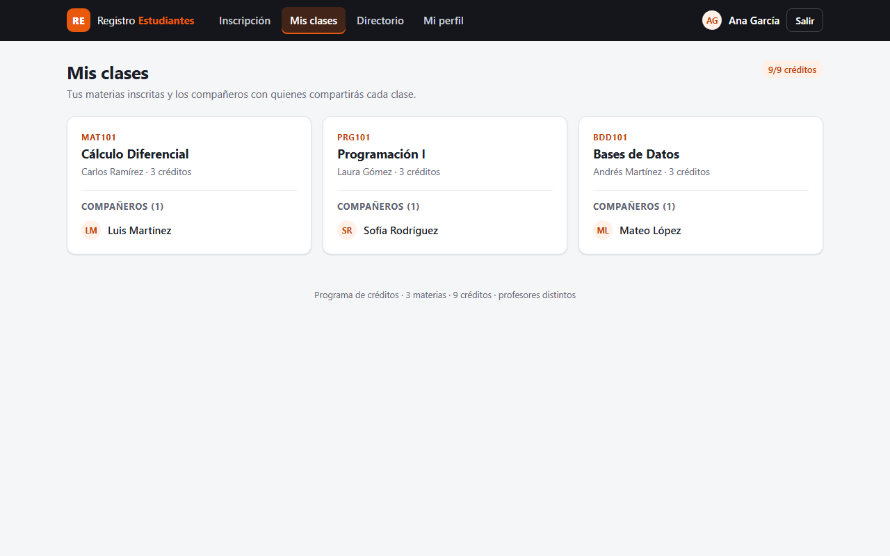
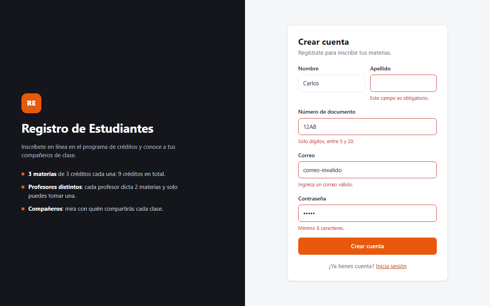
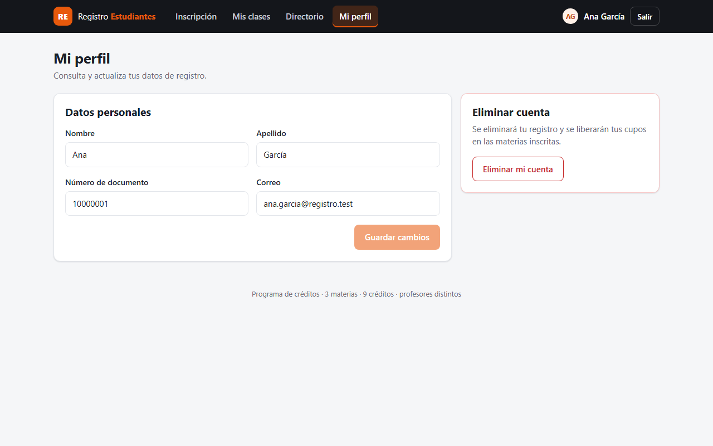

Prueba técnica · Aplicación web
Registro de Estudiantes
Aplicación para el registro en línea de estudiantes en un programa de créditos, con inscripción de materias bajo reglas de negocio garantizadas en interfaz, API y base de datos.
1. Resumen
Se construyó una aplicación cliente-servidor completa:
- Frontend Angular 20: registro e inicio de sesión, selector de materias agrupado por profesor que impide elegir combinaciones inválidas, vista de mis clases con compañeros, directorio de estudiantes actualizado en línea y gestión del perfil.
- API .NET 8 con Clean Architecture, autenticación JWT, validación con FluentValidation y errores estandarizados (ProblemDetails, RFC 7807).
- Base de datos SQL Server creada con scripts versionados. Las reglas críticas (máximo 3 materias, profesores distintos, 3 créditos por materia) están garantizadas con constraints declarativos, seguros ante concurrencia.
- Despliegue en un paso:
setup.cmdverifica requisitos, crea la base de datos, verifica las reglas, compila, ejecuta las pruebas y levanta la aplicación.
2. Cómo ejecutar
git clone https://github.com/mchl27/RegistroEstudiantes.git cd RegistroEstudiantes .\setup.cmd
| Requisito | Versión |
|---|---|
| .NET SDK | 8.0 o superior (con runtime ASP.NET Core 8) |
| Node.js | 20.19+ o 22 LTS |
| SQL Server | Express, Developer o LocalDB con autenticación de Windows (se detecta sola) |
| sqlcmd | cualquiera (winget install Microsoft.Sqlcmd) |
URLs
Web: http://localhost:4200
Swagger: http://localhost:5080/swagger
Cuentas de demostración
ana.garcia@registro.test, luis.martinez@…, sofia.rodriguez@…, mateo.lopez@…
Contraseña: Demo1234
Opciones: -SqlServer "INSTANCIA", -ResetDatabase, -NoStart, -SkipTests. El script se probó sobre una copia limpia del repositorio (sin dependencias instaladas): queda listo en unos 20 segundos.
3. Supuestos e interpretación del enunciado
El enunciado deja algunos puntos abiertos. Estas fueron las decisiones, todas documentadas para que sean fáciles de ajustar:
| Punto abierto | Decisión |
|---|---|
| «Sólo podrá seleccionar 3 materias»: ¿exactamente o máximo? | Exactamente 3 para guardar la inscripción, que completa los 9 créditos del programa. La inscripción se reemplaza de forma atómica. |
| Reglas 8 y 9 parecen contradecirse | Regla 8: directorio con nombre, materias y créditos de cada estudiante. Regla 9: en cada una de mis clases veo solo el nombre de mis compañeros. En ningún caso se exponen correo ni documento de otros estudiantes. |
| Regla 7 con «5 profesores × 2 materias» | Equivale a «no se pueden tomar las dos materias del mismo profesor». Así se presenta en la interfaz. |
| ¿Quién administra materias y profesores? | Son un catálogo fijo cargado por 02_seed.sql. Un módulo de administración queda como mejora futura. |
| «Registro en línea» y CRUD | Autorregistro con autenticación JWT. Cada estudiante consulta, edita y elimina solo su propio registro. |
| Eliminación de un estudiante | Borrado lógico: se conservan los datos para auditoría, se liberan sus cupos y el correo queda disponible para un nuevo registro. |
| «Ver en línea» | El directorio se actualiza automáticamente cada 15 segundos mientras está abierto. |
4. Cumplimiento de requisitos
| # | Regla | Interfaz | API | Base de datos |
|---|---|---|---|---|
| 1 | CRUD de registro en línea | Registro, perfil editable, eliminar cuenta con confirmación | POST /auth/register, GET·PUT·DELETE /students/me | Índices únicos filtrados de correo y documento (WHERE IsDeleted = 0) |
| 2 | Adhesión al programa de créditos | Automática al registrarse | AuthService | FK Student → CreditProgram |
| 3 | 10 materias | Catálogo agrupado por profesor | GET /subjects | Catálogo en 02_seed.sql |
| 4 | 3 créditos por materia | Contador «x/9 créditos» | EnrollmentRules | CHECK (Credits = 3) |
| 5 | Solo 3 materias | Al llegar a 3, el resto se bloquea | Student.Enroll → 422 enrollment.invalid_count | Slot BETWEEN 1 AND 3 + UNIQUE (StudentId, Slot) |
| 6 | 5 profesores, 2 materias cada uno | Una tarjeta por profesor | Modelo Subject.ProfessorId | ProfessorSlot IN (1,2) + UNIQUE (ProfessorId, ProfessorSlot) |
| 7 | No repetir profesor | Se bloquea la otra materia del profesor: «Ya tienes una clase con este profesor» | Student.Enroll → 422 enrollment.same_professor | UNIQUE (StudentId, ProfessorId) + FK compuesta |
| 8 | Ver registros de otros | Directorio con búsqueda (sin tildes), actualizado en línea | GET /students → PublicStudentDto | — |
| 9 | Solo el nombre de los compañeros | Mis clases | GET /enrollments/me → classmates: string[] | Índice IX_Enrollment_SubjectId |
5. Arquitectura
Las flechas indican dependencias. El dominio no depende de nada; la infraestructura implementa las interfaces que define la aplicación.
| Proyecto | Responsabilidad |
|---|---|
| Domain | Entidades con modelo rico: sin setters públicos; los cambios pasan por métodos que validan (Student.Enroll, UpdateProfile, Delete). Student es el aggregate root de sus inscripciones. |
| Application | Casos de uso (AuthService, EnrollmentService…), DTOs, validadores FluentValidation e interfaces (puertos) de repositorios, unidad de trabajo, hash y tokens. |
| Infrastructure | EF Core mapeado a los scripts (sin migraciones), repositorios, transacciones y traducción de errores de SQL Server a mensajes de negocio. PBKDF2 para contraseñas. |
| Api | Controladores delgados (sin try/catch), JWT, GlobalExceptionHandler → ProblemDetails, Swagger con autenticación, CORS. |
| Web | Angular 20 standalone con lazy loading, estado con signals y computed, interceptor JWT funcional, guards y formularios reactivos con las mismas reglas que el backend. |
6. Modelo de datos
Decisiones clave del modelo
Los «slots» (regla 5)
En lugar de contar con un trigger (COUNT(*) > 3, vulnerable a peticiones simultáneas), cada inscripción ocupa un slot 1, 2 o 3 con UNIQUE (StudentId, Slot). Como solo existen 3 slots, es imposible tener una cuarta materia. La regla es declarativa y atómica.
Desnormalización controlada (regla 7)
Enrollment.ProfessorId repite el dato de la materia para poder aplicar UNIQUE (StudentId, ProfessorId). El riesgo de inconsistencia se elimina con la FK compuesta hacia Subject(Id, ProfessorId): la combinación tiene que existir.
Regla 6 en el catálogo
ProfessorSlot IN (1,2) + UNIQUE (ProfessorId, ProfessorSlot): ningún profesor puede tener una tercera materia.
Borrado lógico
Índices únicos filtrados (WHERE IsDeleted = 0): un correo queda libre cuando su dueño elimina la cuenta. EF Core aplica un query filter global que oculta los eliminados.
Scripts: 01_schema.sql (esquema), 02_seed.sql (catálogo, idempotente) y 03_verify_rules.sql (pruebas de reglas dentro de una transacción con ROLLBACK).
7. API
| Método | Ruta | Auth | Descripción |
|---|---|---|---|
| POST | /api/auth/register | — | Registro del estudiante (201 + JWT) |
| POST | /api/auth/login | — | Inicio de sesión |
| GET | /api/subjects | — | Catálogo con profesor y número de inscritos |
| GET · PUT · DELETE | /api/students/me | JWT | CRUD del propio registro |
| GET | /api/students | JWT | Directorio (regla 8) |
| GET | /api/enrollments/me | JWT | Mis clases y compañeros (regla 9) |
| PUT | /api/enrollments/me | JWT | Reemplaza la inscripción: exactamente 3 materias |
Errores estandarizados (ProblemDetails, RFC 7807)
| HTTP | Significado | Ejemplo de code |
|---|---|---|
| 400 | Formato inválido (FluentValidation) | validation + errores por campo en español |
| 401 | Credenciales o token inválidos | auth.invalid_credentials |
| 404 | Recurso inexistente | subject.not_found, student.not_found |
| 409 | Conflicto con datos existentes | student.email_taken, student.document_taken |
| 422 | Regla de negocio incumplida | enrollment.same_professor, enrollment.invalid_count |
PUT /api/enrollments/me { "subjectIds": [1, 2, 7] }
HTTP/1.1 422 Unprocessable Entity
{ "title": "Regla de negocio incumplida", "status": 422,
"detail": "No puedes tomar dos materias con el mismo profesor (Carlos Ramírez).",
"code": "enrollment.same_professor" }
8. Seguridad y privacidad
- Contraseñas con PBKDF2 y sal aleatoria (
PasswordHasherde ASP.NET Core Identity). Nunca se almacenan ni se devuelven en texto plano. - JWT firmado con HMAC-SHA256; se validan emisor, audiencia, firma y expiración. La API no arranca si la clave tiene menos de 32 caracteres. En producción se configura con la variable de entorno
Jwt__Key. - Login sin enumeración de usuarios: se devuelve el mismo error si el correo no existe o si la contraseña es incorrecta.
- Privacidad por diseño: los DTOs públicos (
PublicStudentDto,classmates) no contienen correo ni documento. Esos datos no salen del servidor, no se trata solo de ocultarlos en la interfaz. - Autorización por identidad: los endpoints
/metoman el id del token (sub), nunca del cliente. Un estudiante no puede modificar a otro. - El frontend cierra la sesión automáticamente ante un 401 y protege sus rutas con guards.
9. Calidad y pruebas
Pruebas automáticas
Dominio · xUnit 11/11
- 3 materias con profesores distintos → 9 créditos, slots 1-2-3
- 1, 2 o 4 materias →
invalid_count - Dos materias del mismo profesor →
same_professor - Materia repetida →
duplicate_subject - Reinscribir reemplaza la inscripción anterior
- Borrado lógico libera cupos y bloquea cambios
- Normalización de correo y campos obligatorios
Base de datos · SQL 11/11
- Caso válido aceptado (2 estudiantes)
- 4.ª materia (slot 4 o repetido) → rechazada
- Dos materias del mismo profesor → rechazada
- Materia duplicada → rechazada
- Profesor falso para la materia → rechazado (FK compuesta)
- Créditos ≠ 3 y 3.ª materia de un profesor → rechazados
- Correo duplicado rechazado; reutilizable tras borrado lógico
setup.ps1 ejecuta ambos conjuntos en cada instalación y se detiene si alguno falla.
Pruebas funcionales de punta a punta (navegador)
| # | Escenario | Resultado |
|---|---|---|
| 1 | Registro de un estudiante nuevo → entra a Inscripción con 0/9 créditos | OK |
| 2 | Elegir una materia bloquea la otra del mismo profesor; con 3 se bloquean las 7 restantes | OK |
| 3 | Guardar inscripción → aparece en Mis clases con compañeros y en el Directorio con «Tú» | OK |
| 4 | El directorio no expone ningún correo (privacidad) | OK |
| 5 | Editar perfil; correo ya usado → error bajo el campo | OK |
| 6 | Eliminar cuenta → los compañeros dejan de verlo y no puede iniciar sesión | OK |
| 7 | Ruta protegida sin sesión → redirige al login | OK |
| 8 | Sin desbordes ni scroll horizontal a 1280, 1024, 820, 375 y 320 px (medición automática) | OK |
Incidencias detectadas en las pruebas y corregidas
| Hallazgo | Causa y corrección |
|---|---|
| Swagger mostraba HTTP 422 con cuerpo de error 500 | Swagger envía Accept: text/plain y el escritor de ProblemDetails no lo soportaba. Se respondió siempre en JSON y se declaró Produces("application/json"). Commit fix(api). |
| Campo «Apellido» desbordaba la tarjeta (≥ 820 px) | El ancho intrínseco del <input> impedía encoger la columna de grid. Se usó minmax(0, 1fr) y min-width: 0. Commit fix(web). |
| El instalador omitía la compilación si había otra API corriendo | Detectado al probar sobre una copia limpia. Ahora siempre compila y solo reutiliza binarios si están bloqueados. |
10. Capturas de pantalla








11. Decisiones técnicas y alternativas descartadas
| Decisión | Motivo |
|---|---|
| Scripts SQL como fuente de verdad (sin migraciones EF) | El enunciado pide scripts explícitamente, y así un DBA puede revisarlos. EF Core solo mapea las tablas. |
| Clean Architecture ligera, sin MediatR/CQRS | Separa responsabilidades sin ceremonia innecesaria para el tamaño del problema. |
Inscripción como reemplazo atómico (PUT con 3 materias) | Evita estados intermedios, es idempotente y se ejecuta en una sola transacción. |
| 422 para reglas de negocio | Distingue «dato mal formado» (400) de «dato válido que incumple una regla». |
| Consultas periódicas (15 s) para «en línea» | Suficiente para el caso. SignalR queda como mejora si se requiere tiempo real estricto. |
| Servicios concretos sin interfaz | YAGNI: las interfaces están donde aportan (puertos hacia infraestructura). |
12. Mejoras futuras
- Tests de integración de la API con
WebApplicationFactory+ Testcontainers (SQL Server real). - Cupos máximos por materia y lista de espera.
- Rol de administrador para gestionar materias, profesores y programas.
- Notificaciones en tiempo real con SignalR cuando alguien se une a una de mis clases.
- Contenedores Docker y pipeline CI/CD (build, tests y análisis estático en cada PR).
- Refresh tokens y bloqueo de cuenta tras intentos fallidos.
13. Entregables
| Entregable | Ubicación |
|---|---|
| Aplicación web (cliente) | frontend/ |
| Servidor (API REST) | backend/ |
| Scripts de base de datos SQL Server | database/01_schema.sql, 02_seed.sql, 03_verify_rules.sql |
| Instalación y ejecución en un paso | setup.cmd / setup.ps1 |
| Instrucciones | README.md |
| Este documento | docs/Entrega.pdf |